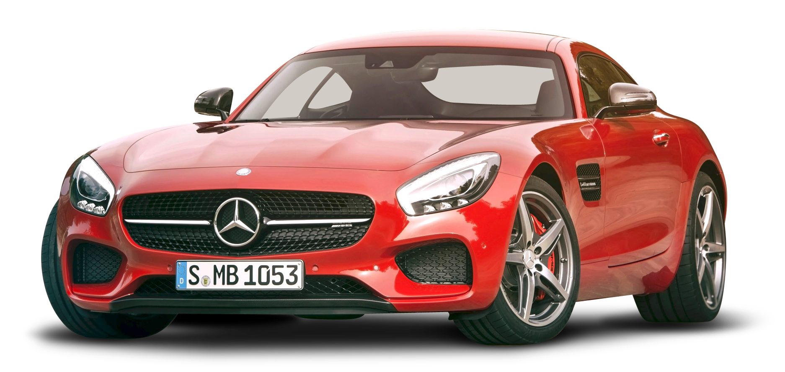

Rolls-Royce Ghost

The Rolls-Royce Ghost is a full-sized luxury car manufactured by Rolls-Royce Motor Cars. The "Ghost" nameplate, named in honour of the Silver Ghost, a car first produced in 1906, was announced in April 2009 at the Auto Shanghai show.
BMW XM

Exclusive, expressive, electrified: The BMW XM combines impressive presence with the high performance of a BMW M and powerful plug-in hybrid technology of the latest generation.
Mercedes-AMG-GT
The Mercedes-AMG GT is a series of 2-door sports cars produced by German automobile manufacturer Mercedes-AMG. The car was introduced on 9 September 2014 and was officially unveiled to the public in October 2014 at the Paris Motor Show.[1] While not directly replacing the SLS AMG (competing in a different segment), it is the second sports car developed entirely in-house by Mercedes-AMG